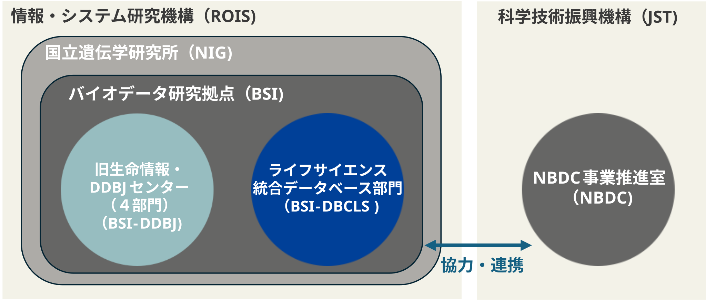

DBCLSについて

ライフサイエンス統合データベース部門（Database Division for Life Science: DBCLS、旧：ライフサイエンス統合データベースセンター）は、ライフサイエンス分野におけるデータベース統合化の拠点を形成することを目的に、平成19（2007）年4月に大学共同利用機関法人情報・システム研究機構（ROIS）に設立され、令和8（2026）年から国立遺伝学研究所の一部門になりました。ライフサイエンス分野のデータベースとサービスの専門機関として、国内外のデータベース統合化と利用者の利便性向上のための基盤技術開発を継続的に行っています。
従来より同じ ROIS に所属する国立遺伝学研究所の生命情報・DDBJセンター（DDBJ）と、塩基配列データや遺伝子発現データの統合化や再利用のための基盤技術開発や塩基配列データの注釈付のためのツール開発などで協力・連携してきました。令和8（2026）年からは、国立遺伝学研究所の中に設置されたバイオデータ研究拠点（BSI）に両センターが移行しました。BSIでは、生命科学データサイエンスを推進する研究拠点として、DBCLSとDDBJが持つデータ・技術・サービスを統合的に活用し、国内外の研究者に価値の高いバイオデータ基盤を提供することを目指しています。
ライフサイエンスデータベース統合推進事業においては、これまでDBCLSは、科学技術振興機構のNBDC事業推進室（NBDC）と共同研究・委託研究を通じて協力し、NBDCが進めている国内を中心としたデータベースの統合化と保全に関して、主に基盤技術の開発を担当してきました。令和7（2025）年からは文部科学省の補助金事業（ナショナルライフサイエンスデータベースプロジェクト: NLDP）を受け、AI時代におけるデータベース統合の諸課題に取り組んでいます。